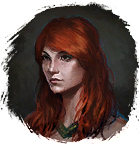

Древняя энергия
Предметы / Добыча
Открыть в интерактивной вики →
| Вес | 15 |
|---|---|
| Цена | 15 |
Описание
Компонент, используемый для изготовления  Малая Фляга Знания. Её создает
Малая Фляга Знания. Её создает
Малая Фляга Знания. Её создает 
Дарья в Трентисе.| Ингредиент для изготовления Малой фляги знания. Изготавливает Дарья в Трентисе. |
Где найти
Применение
|
Как добыть
| Сбор в локации: |